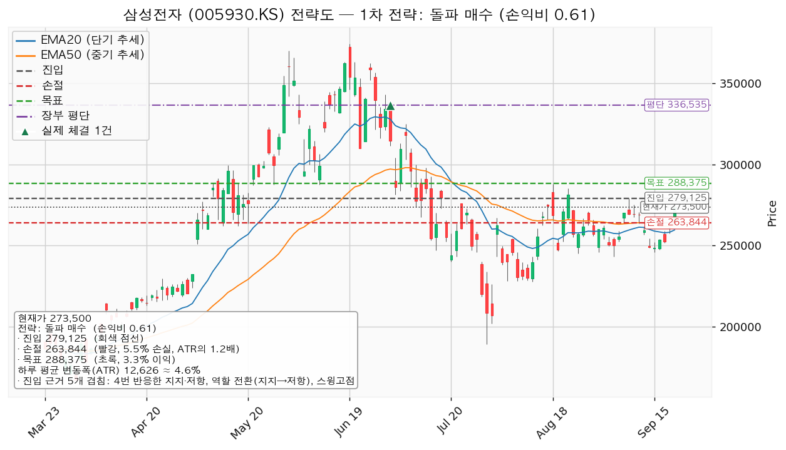
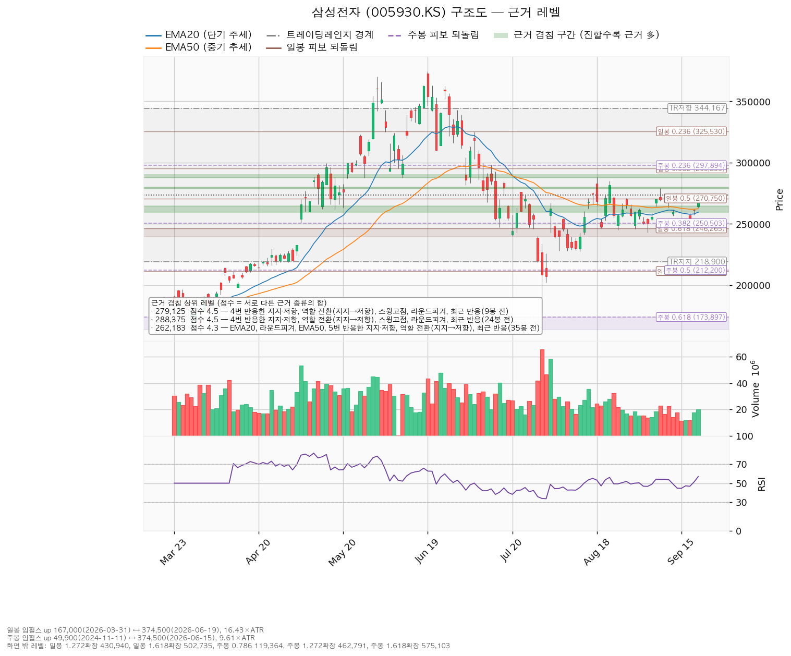
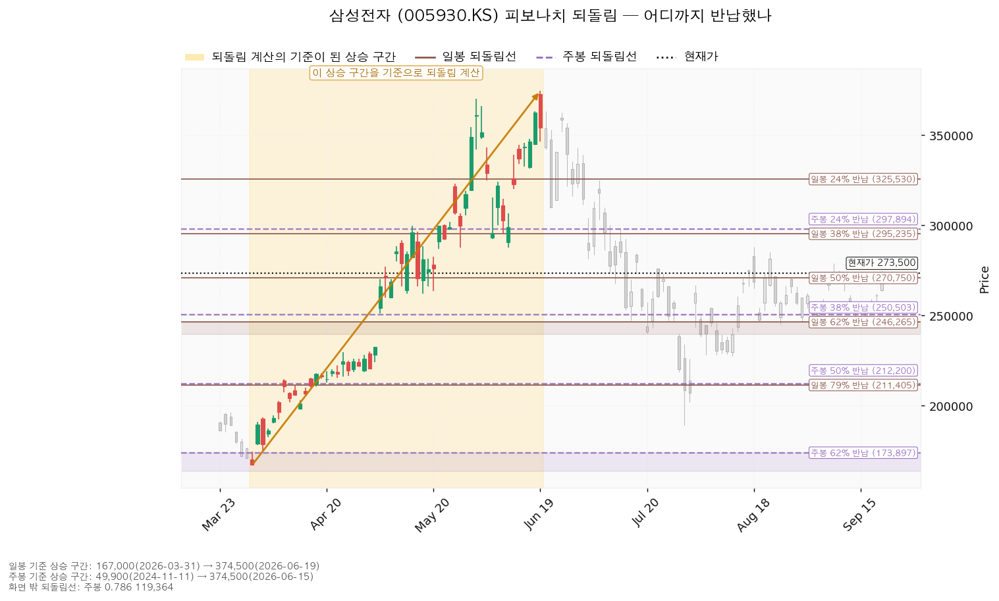
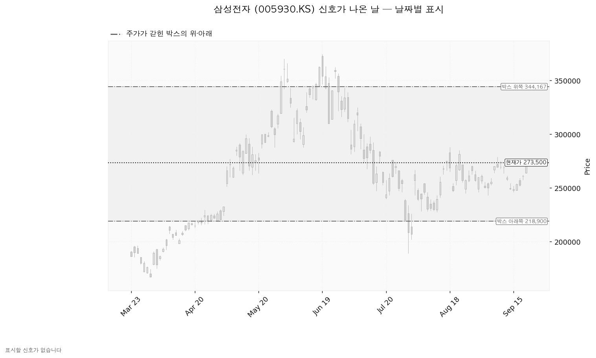

삼성전자(005930.KS)는 D램·낸드 등 메모리 반도체와 파운드리, 스마트폰·가전·디스플레이를 만드는 한국 기업이며, 매출의 큰 부분이 메모리 반도체 업황에 연동됩니다.
| 구분 | 가격 | 판정 방식 | 현재가 대비 | 상태 |
|---|---|---|---|---|
| 회복선(진입 조건) | 279,125원 | 일봉 종가로 회복한 뒤 되돌림에서 지지되는지 | +2.06% (0.45 ATR) | 회복 대기 — 09-21 종가 273,500원 |
| 집행 손절 | 263,844원 | 도달 시 즉시 청산 — 279,125원에 진입했을 때만 유효하며, 이번에는 진입하지 않으므로 의미가 없습니다 | -3.53% (0.76 ATR) | — |
| 관망 종료 기준 | 259,562원 | 일봉 종가가 아래로 마감 / 또는 2026-10-28 실적 | -5.10% (1.10 ATR) | 유지 중 |
| 확인선 | 288,375원 | 일봉 종가 돌파 후 되돌림에서 지지 확인 | +5.44% (1.18 ATR) | 미돌파 |
| 폐기선(구조) | 218,900원 | 이탈 후 3거래일 내 회복 실패 + 반등에서 저항으로 확인 | -19.96% (4.32 ATR) | 유지 중 — 거리가 멀어 실무상 쓰이지 않음 |
표의 ATR은 하루 평균 변동폭(이번 조회 기준 12,626원, 주가의 4.62%)을 뜻합니다. 확인선 288,375원은 대표 셋업의 목표와 같은 가격이며, 여기서 막혀 되밀리면 그것이 청산 자리이고 일봉 종가로 넘어서면 새 셋업으로 다시 잡는 자리입니다. 박스 상단 344,167원은 그 위 맥락으로만 봅니다.
① 직전 진입 조건은 충족됐고, 확인선까지 같은 날 넘었습니다. 직전 리포트는 "일봉 종가가 261,932원 위에서 마감할 때만 진입"이라고 적었습니다. 09-17 종가 252,500원, 09-18 종가 261,000원으로 미달이었고 09-21 종가 273,500원으로 충족됐습니다. 직전 확인선 269,250원도 같은 날 종가로 넘었습니다. 목표 278,900원은 09-21 고가 275,000원으로 닿지 않았고 집행 손절 247,214원도 닿지 않아, 충족 이후 어느 쪽에도 도달하지 않은 상태입니다. 관망 종료 240,000원과 폐기선 219,900원은 종가로 이탈한 날이 없어 둘 다 유지됐습니다. 다만 체결 장부에 이번 매수 기록이 없어 계획과 집행이 벌어져 있습니다 — 조건은 충족됐으나 실제로 산 기록은 2026-07-01 10주뿐입니다. 직전 리포트가 09-16 종가를 253,250원으로 적었는데 확정 종가는 253,500원이며, 판정이 달라지는 차이는 아닙니다.
② 좌표가 한 단 위로 올라갔고, 박스 판정 자체가 바뀌었습니다.
| 항목 | 직전(09-16) | 이번(09-21) | 왜 |
|---|---|---|---|
| 박스 | 219,900~278,000원 (40거래일) | 218,900~344,167원 (90거래일) | 40거래일 창이 더는 횡보로 판정되지 않아(가격이 창 안에 머문 비율 82.5%, 아래로 흐르는 정도 0.617) 90거래일 창이 선택됐습니다 |
| 회복선(진입) | 261,932원 | 279,125원 | 261,932원을 종가로 되찾아 다음 회복 대상이 278,750~280,000원 구간으로 올라갔습니다 |
| 확인선 | 269,250원 | 288,375원 | 269,250원도 넘어서면서 그 위 287,750~290,000원 구간이 확인선이 됐습니다 |
| 집행 손절 | 247,214원 | 263,844원 | 손절 근거가 주봉 38% 반납선에서 겹침 구간 267,000~270,750원 아래로 올라왔습니다 |
| 목표 | 278,900원 | 288,375원 | 278,900원이 이번에는 진입가라 목표가 그 위 구간으로 올라갔습니다 |
| 손익비 | 1:1.15 | 1:0.61 | 손절 폭 15,281원에 목표까지 9,250원뿐입니다 |
| 관망 종료 기준 | 240,000원 | 259,562원 | 아래쪽 최고 겹침 구간이 240,000~246,265원(2.7점)에서 259,562~264,500원(4.3점)으로 바뀌었습니다 |
| 폐기선 | 219,900원 | 218,900원 | 박스 하단이 90거래일 창 기준으로 바뀐 만큼입니다 |
| 박스 안쪽 판정 | 중립 | 매집 우위 | 저점 흐름이 평탄에서 절상으로, 상승봉/하락봉 거래량비가 0.86에서 1.01로 올라왔습니다 |
③ 판단이 바뀌었습니다 — 조건부 대기에서 패스로 내려갑니다. 구조는 오히려 좋아졌습니다(박스 안쪽이 매집 우위로 바뀌었고, 200일선 220,669원 위이며, 저점이 절상됐습니다). 바뀐 것은 가격 위치입니다. 09-21에 273,500원까지 올라오면서 다음 저항 279,125원까지 0.45 ATR, 그 위 목표 288,375원까지 다시 0.73 ATR만 남았고, 손절은 구조상 1.21 ATR 아래에 둘 수밖에 없어 손익비가 1 아래로 떨어졌습니다. 직전 리포트에 오류는 없었습니다.
산출된 셋업은 셋이며 전부 손익비 1 미만이라 엔진도 셋 다 "비매력·보류"로 표시했습니다. 되돌림 매수는 269,250원 진입(`1:0.77`, 선취형, 진입 근거 겹침 3.3점 — 스윙고점·라운드피겨·일봉 50% 반납선), 돌파 매수는 279,125원 진입(`1:0.61`, 돌파 확인형), 지지 확인 매수는 273,500원 진입(`1:0.56`, 지지 확인형, 진입 근거 겹침 4.3점 — EMA20·라운드피겨·EMA50·5번 반응한 지지·저항·역할 전환(지지→저항))입니다. 지지 확인 매수만 중간 목표가 있어 279,125원에서 50% 익절하고 잔여분 손절을 273,500원(본전)으로 올린 뒤 288,375원에서 나머지 50%를 파는 계획이 붙지만, 전 구간 손익비가 `1:0.39`이고 본전 손절에 걸리는 최악의 경우는 `1:0.10`까지 내려가 이 역시 보류입니다. 대표 셋업은 돌파 매수이며, 선정 사유는 다음과 같습니다: *"손익비 0.61 × 구조 증명도(돌파 확인형) × 근거 겹침 4.5점으로 선정. 저항을 종가로 넘긴 뒤 진입한다 — 진입가는 불리하나 구조가 먼저 증명된다. 손익비만 보면 pullback_long(0.77)가 높지만, 구조 증명도가 낮아 대표 셋업으로 삼지 않는다."* 손익비 1등인 되돌림 매수는 구조 증명도가 선취형(가중치 0.70)이라 구조가 증명되기 전에 먼저 잡는 셋업이고, 돌파 매수는 돌파 확인형(1.00)입니다. 상대강도·거래량 배수(돌파 매수 0.969배, 되돌림 매수 1.019배)를 빼고 계산해도 순서는 같아, 이 배수 때문에 대표가 바뀐 것은 아닙니다. 기준 지수(코스피) 대비 초과수익은 20일 +1.90%, 60일 -2.09%, 120일 +23.16%이고 가중(20일 0.45 · 60일 0.30 · 120일 0.25) 초과수익은 +6.01%이며, 상대강도선은 60일 신고가가 아닙니다.
| 항목 | 값 |
|---|---|
| 셋업 | breakout_long (돌파 매수) — 돌파 확인형(구조 증명도 1.0, 가장 높은 등급) |
| 엣지의 종류 | 모멘텀 — "저항을 돌파하면 그 방향이 이어진다"는 전제 |
| 성격 | 자주 틀리고 소수가 크게 맞는 유형입니다(이 유형의 일반적 성격이며, 이 엔진에서 측정한 값이 아닙니다) |
| 진입 | 279,125원 — 일봉 종가로 넘긴 뒤 (현재가 대비 +2.06%, 0.45 ATR 위) |
| 진입 근거 겹침 | 4.5점 / 278,750~280,000원 — 근거 4종: 4번 반응한 지지·저항, 역할 전환(지지→저항), 스윙고점, 라운드피겨. 9거래일 전 실제로 되밀린 자리라는 가산이 붙습니다 |
| 손절 | 263,844원 — 손절 폭 15,281원 = 하루 평균 변동폭의 1.21배(진입가 대비 -5.47%) |
| 손절 근거 | 겹침 구간 267,000~270,750원(3.3점) 바로 아래. 구간 안쪽이 아니라 아래에 둔 값이라 손익비가 그만큼 낮게 나옵니다 |
| 목표 | 288,375원 — 진입에서 9,250원 위(하루 변동폭의 0.73배), 겹침 4.5점 / 287,750~290,000원 |
| 손익비 | 1:0.61 (손절 폭 1.21 ATR) |
구조적 손절 기준 손익비가 따로 산출되지 않은 것은 이 손절이 이미 구조 손절이기 때문입니다. 손절을 조여 손익비를 만든 숫자가 아니라 0.61이 이 구조의 값 그대로입니다. 중간 목표가 없어 단일 목표 전량 청산이고, 진입에서 목표까지가 하루 변동폭의 0.73배뿐이라 트레일링·다단 청산도 걸지 않습니다. 모멘텀 전제에 고정 목표가 붙은 조합이지만 집행 규칙이 "288,375원에서 전량 청산하고 그 위 구간은 새 셋업으로 다시 잡는다"로 정해져 있어, 두 학파가 어긋나는 문제는 남지 않습니다. 계획 진입가 279,125원은 장부 평단 336,535원보다 -17.06% 아래라 들어간다면 평단을 낮추는 매수이며, 이번 판정은 그 매수를 하지 않는 것입니다.

| 단계 | 조건 | 의미 | 행동 |
|---|---|---|---|
| ① 관찰 | 일봉 종가가 279,125원 아래로 마감 | 구조 이탈이 시작된 것이며, 되돌아 올라오면 속임수 하락일 수 있어 아직 무효가 아닙니다 | 신규 진입만 중단. 집행 손절은 그대로 둡니다 |
| ② 경고 | 이탈 후 3거래일 안에 279,125원을 종가로 회복하지 못함, 또는 그 전에 일봉 종가가 266,499원 아래로 마감(하루 평균 변동폭의 1배만큼 더 밀림) — 둘 중 먼저 오는 쪽 | 박스 안으로 되돌아갈 가능성이 우세해집니다 | 잔여 비중 축소. 반등이 나오면 이 가격에서의 반응을 확인합니다 |
| ③ 무효 | 반등이 279,125원에서 막히고 그 아래로 되밀림 (지지가 저항으로 전환) | 셋업 폐기 — 구조 해석이 틀린 것으로 확정 | 포지션 정리 후 새 구조가 만들어질 때까지 관망 |
집행 손절 263,844원은 이 3단계 판정과 무관하게 별도로 작동합니다. 장중 일시 이탈은 어느 단계에도 해당하지 않습니다. 이번에는 진입하지 않으므로 세 단계 모두 실제로 적용되지 않으며, 279,125원을 종가로 넘긴 뒤 새 리포트에서 다시 잡을 때의 판정 틀입니다. 논지 무효화는 가격과 별개로 겁니다 — 폐기선 218,900원은 현재가에서 하루 평균 변동폭의 4.32배 아래로, 실무상 무효화 기준으로 작동하지 않습니다. 대신 2026-10-28 3분기 실적에서 (1) 내년 추정이익 70,406원이 추정 범위 하단(48,732원) 쪽으로 낮아지거나 (2) 90일 상향(올해 +6.1%, 내년 +21.3%)이 하향으로 돌아서면, 6월 고점 이후의 하락을 배수 수축으로 본 판단이 무너지므로 가격이 폐기선 위에 있어도 관망으로 되돌립니다.
① 상승 전환 — 279,125원을 종가로 회복하고 되돌림에서 지켜진 뒤 288,375원을 종가로 돌파. 구조로는 지지 확인 → 강세 신호 → 되돌림 지지 → 상승 국면 순서입니다. 다만 그 진입의 손익비가 `1:0.61`이므로 이번 리포트로는 사지 않고, 288,375원을 종가로 넘어서면 그 위 295,235~300,000원(3.1점)을 목표로 하는 새 셋업을 다시 냅니다.
② 횡보 지속 — 218,900원을 지키면서 288,375원 아래 박스가 이어짐. 구조는 유지되며 매물 소화에 시간이 필요한 국면입니다. 6월 고점 374,500원에서 189,200원까지 밀린 뒤이므로 손바뀜에 시간이 걸리는 것은 자연스럽습니다. 추적 항목 셋의 현재 관측치: 지지 테스트 거래량 감소(2.18배 → 0.91배 → 0.77배), 박스 안 저점 절상, 상승봉/하락봉 거래량비 1.01. 직전 리포트에서는 첫 항목만 우호적이었는데 이번에는 셋 다 우호적이거나 중립으로 올라왔습니다. 보유 10주는 240,000원 종가를 지키는 동안 그대로 둡니다.
③ 시나리오 폐기 — 218,900원 이탈 → 3거래일 내 종가 회복 실패(또는 그 전에 종가가 206,274원 아래로 마감) → 반등이 218,900원에서 막힘. 매집이 아니라 재분산이었다는 뜻이며 추가 저점 갱신 가능성이 열립니다. 보유분은 그보다 앞선 240,000원 종가 이탈에서 이미 정리됩니다.
박스는 40·90·180거래일 세 창을 시험해 90거래일 창이 선택됐습니다(조회한 전체 일봉 727개). 40거래일 창은 가격 유지 비율 82.5%에 아래로 흐르는 정도 0.617로 더는 횡보로 판정되지 않고, 90거래일 창은 88.9%에 0.465, 180거래일 창은 88.3%에 0.475입니다. 이 박스는 218,900~344,167원이며 폭이 하루 변동폭의 9.92배입니다. 직전 구간은 147,133~222,333원 박스였고 가격이 위로 뚫고 올라와 지금 박스에 들어왔습니다 — 아래에서 올라온 박스이므로 재축적이거나 분산의 갈림길이고, 판단 근거는 박스 안쪽입니다. 그 박스 안쪽은 매집 우위로 판정됐습니다. 지지 테스트는 2026-07-29 189,200원(평소 거래량의 2.18배), 08-04 228,000원(0.91배), 08-11 227,500원(0.77배)으로 테스트마다 거래량이 줄었고, 박스 안 저점은 절상이며, 상승봉과 하락봉의 거래량비는 1.01로 균형입니다. 국면 후보는 매집입니다.
| 가격대 | 겹침 점수 | 근거 | 현재가 대비 |
|---|---|---|---|
| 295,235~300,000원 | 3.1 | 일봉 38% 반납선 + 주봉 24% 반납선 + 라운드피겨 | +7.95% ~ +9.69% |
| 287,750~290,000원 | 4.5 | 4번 반응한 지지·저항 + 역할 전환(지지→저항) + 스윙고점 + 라운드피겨 + 24거래일 전 반응 | +5.21% ~ +6.03% (확인선·목표) |
| 278,750~280,000원 | 4.5 | 4번 반응한 지지·저항 + 역할 전환(지지→저항) + 스윙고점 + 라운드피겨 + 9거래일 전 반응 | +1.92% ~ +2.38% (회복선·진입) |
| 267,000~270,750원 | 3.3 | 스윙고점 + 라운드피겨 + 일봉 50% 반납선 + 35거래일 전 반응 | -2.38% ~ -1.01% (손절은 이 아래) |
| 259,562~264,500원 | 4.3 | EMA20 + 라운드피겨 + EMA50 + 5번 반응한 지지·저항 + 역할 전환(지지→저항) | -5.10% ~ -3.29% (관망 종료 기준) |
| 250,000~250,503원 | 2.6 | 라운드피겨 + 주봉 38% 반납선 + 4거래일 전 반응 | -8.59% ~ -8.41% |
| 240,000~246,265원 | 2.7 | 스윙저점(3개) + 일봉 62% 반납선 + 4거래일 전 반응 | -12.25% ~ -9.96% (보유 10주 정리선) |
| 218,900원 | 1.2 | 박스 하단 | -19.96% (폐기선) |
위쪽에서 가장 두꺼운 두 곳(4.5점)이 나란히 진입 자리와 목표 자리이고, 둘 사이가 9,250원뿐이라는 것이 이번 손익비가 1 아래로 내려간 이유입니다. 아래쪽에서 가장 두꺼운 곳은 259,562~264,500원(4.3점)이며, 5월까지 지지였다가 저항으로 역할이 바뀌었던 자리를 09-21 종가로 다시 넘어선 상태입니다.

일봉 되돌림은 167,000원(2026-03-31) → 374,500원(2026-06-19) 상승 구간 기준입니다(구간 폭이 하루 변동폭의 16.43배). 현재가 273,500원은 50% 반납선 270,750원을 위로 넘어 38% 반납선 295,235원과의 사이에 있습니다. 62% 반납선 246,265원은 보유 10주 정리 구간의 위쪽 경계입니다. 주봉 되돌림은 49,900원(2024-11-11) → 374,500원(2026-06-15) 기준이며, 현재가는 주봉 38% 반납선 250,503원 위 +9.18%입니다.

날짜별 신호는 이번 조회에서 산출되지 않았습니다. 직전 리포트의 두 건(2026-08-18·09-08 고점 속임수 돌파)은 당시 박스 상단이 278,000원이어서 그 부근의 되밀림으로 잡혔던 것이고, 이번에 박스 상단이 344,167원으로 다시 잡히면서 두 날짜 모두 박스 상단 부근이 아니게 됐습니다. 아래 차트에 표시된 신호가 없는 것은 이 때문입니다.

(a) 배수. 후행 PER은 이번에도 값이 오지 않아 후행 배수로는 비싸다·싸다를 판정하지 않습니다. 선행으로는 올해 추정이익 48,185원 기준 5.68배, 내년 추정이익 70,406원 기준 3.88배이고, 두 배수의 차이는 내년 이익이 +46.1% 늘어난다는 추정에서 나옵니다. 메모리 업종은 이익이 정점 부근일 때 배수가 낮게 보이므로 낮은 배수 자체를 저평가의 근거로 쓰지 않습니다. (b) 목표주가 분포. 36명의 목표는 290,000원~725,000원이고 평균은 475,850원입니다. 현재가 273,500원은 36명 중 가장 낮은 목표 290,000원보다도 -5.69% 아래입니다. 직전 리포트에서 -12.67% 아래였던 것이 가격이 오른 만큼 좁혀졌습니다.
(c) 하락의 성격 — 배수 수축입니다. 6월 고점 374,500원에서 밀리는 동안 이익 추정치는 90일간 올해 +6.1%, 내년 +21.3% 상향됐습니다. 이익 전망이 내려가며 가격이 빠진 것이 아니므로 실적이 꺾였다거나 주도주에서 밀려났다고 적지 않습니다. (c-2) 상향이 지금도 진행 중인지. 최근 30일로 좁히면 올해는 -0.7%로 멈췄고 내년은 +4.6%로 계속 오릅니다. 밸류에이션을 떠받치는 쪽이 내년 추정치이므로 상향은 진행 중이고, 확인 항목은 2026-10-28 실적입니다. 올해 추정치가 30일 기준으로 소폭 내려간 것은 3분기 실적 직전에 자주 나타나는 조정 범위이나, 실적에서 올해 숫자가 더 내려가면 내년 숫자도 함께 따라 내려가는지를 봐야 합니다.
(d) 현금흐름 — 흑자이며 적자 항목이 없습니다. 2025-12-31 결산 기준 영업활동 현금흐름 85.3조원, 잉여현금흐름 33.2조원, 설비투자 52.2조원(직전 대비 -3.0%)입니다. 세 수치가 서로 맞아떨어지므로 현금흐름 쪽에서 지금 걸 확인 항목은 없습니다. (e) 상승 여력의 분해. 평균 목표 475,850원은 현재가 대비 +73.99%입니다. 내년 추정이익 70,406원 기준 그 목표가 함의하는 배수는 6.76배이고, 현재가가 올해 이익에 매기는 배수는 5.68배입니다. 상승분은 이익 증가(+46.1%)와 배수 확장(5.68 → 6.76배, +19.1%)이 곱해진 값입니다(1.461 × 1.191 = 1.740). 이익 증가만으로는 평균 목표에 닿지 않으며 배수가 다시 벌어져야 한다는 조건이 붙어 있습니다. 컨센서스는 12개월 시계이고 이번 셋업은 수 주 시계이므로 둘을 직접 비교하지 않습니다.
| 날짜 | 이벤트 | 볼 것 |
|---|---|---|
| 2026-10-28 | 3분기 실적 발표 | 올해 EPS 추정 48,185원(범위 41,963~60,367원) 대비 실제치, 그리고 발표 후 내년 추정치 70,406원이 유지·상향되는지 |
가격 기준 외에 날짜가 정해진 확인 이벤트는 위 하나입니다. 그 이후 2~3개 분기에 이미 알려진 역풍은 이 데이터로 확인할 자료가 없어 적지 않습니다.
체결 장부 기준 보유는 10주, 평단 336,535원(2026-07-01 매수 1회, 매입 원가 3,365,350원)입니다. 현재 평가액 2,735,000원, 평가손익 -630,350원(-18.73%)이고, 240,000원에서는 -965,350원(-28.68%)이 됩니다. 신규 비중은 계산하지 않습니다 — 1회 매매에서 계좌의 1%를 잃는 한도로는 손절 폭 5.47%에 대해 포지션이 계좌의 18.3%가 되고 13% 상한이 걸리지만, 손익비가 1 미만이라 진입 자체를 하지 않으므로 이 숫자는 집행되지 않습니다. 도구 적합성은 문제가 없습니다. 하루 평균 변동폭이 주가의 4.62%로 8%를 넘지 않고, 손절 폭은 하루 변동폭의 1.21배로 하루 움직임보다 넓어 논지와 무관한 흔들림만으로 체결될 위험은 크지 않습니다. 시계는 수 주입니다.
최종 판정: 패스. 대표 셋업의 손익비가 `1:0.61`이고 나머지 둘도 `1:0.77`·`1:0.56`으로 전부 1 미만입니다. 조건 점검 4/9에서 미달한 다섯 중 손익비·거래량 강도가 이번 판정의 직접 사유이고(돌파를 노리는 자리인데 최근 5일 최대 거래량이 20일 평균의 1.2배에 그쳤습니다), 이동평균 정배열·52주 고점 대비·상대강도선 신고가는 아직 추세가 돌아섰다고 보기 어렵다는 표시입니다. 다음에 볼 것은 279,125원 종가 돌파와 그때 실린 거래량이며, 넘어서면 목표가 위로 옮겨가므로 새 리포트에서 손익비를 다시 계산합니다.
ATR: 하루 평균 변동폭. EMA20·EMA50: 20일·50일 지수이동평균. RSI(14): 14일 상대강도로 50이 중립이며 이번 조회에서 57.0입니다. PER: 주가를 주당순이익으로 나눈 배수이며, 후행은 이미 낸 이익, 선행은 앞으로 낼 것으로 추정한 이익 기준입니다. EPS: 주당순이익. 되돌림선: 직전 상승 구간을 얼마나 반납했는지를 비율로 표시한 가격.